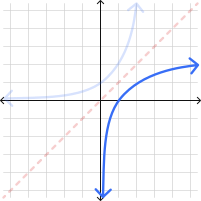
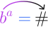
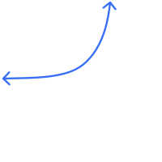
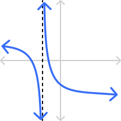
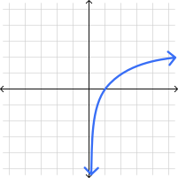
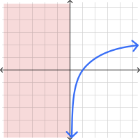

Write your name & answers on a sheet of paper.
What is the horizontal line test? Does \(b^x\) pass or fail?
Is there any exponent \(x\) that makes \(2^x = 0\)? What about \(b^x=0\)?
On a separate paper (for YOUR reference today!) fill out this table:
\( \begin{array}{|c|c|c|c|c|c|c|c|c|c|c|c|c|} \hline \phantom{^1}b\phantom{^1} & 1 & 2 & 3 & 4 & 5 & 6 & 7 & 8 & 9 & 10 & 11 & 12 \\ \hline b^2 \\ \hline b^3 &&&&&& \times& \times& \times& \times & \times & \times & \times \\ \hline \end{array} \)
Write your name & answers on a sheet of paper.
What is the horizontal line test? Does \(b^x\) pass or fail?
HLT checks if a function is one-to-one (which is required for it to have an inverse!); \(b^x\) passes
Is there any exponent \(x\) that makes \(2^x = 0\)? What about \(b^x=0\)?
No, there is no exponent that makes \(2^x=0\).
\(b^x=0\) is possible only when \(b=0\).
Remember to submit any Chapter 3 review requests via the Google form (linked in Canvas)!
a logarithm \(\log_b(x)\) is the inverse of an exponential
\( f(x)= b^x { \color{#111111} \longleftrightarrow} f^{-1}(x)=\log_b(x) \)

\(\log_b(\#) \) is asking, “What power of the base \(b\) gives me \(\#\)?”

means the same thing as

Rewrite these logarithmic equations as questions in words, then use that to solve for \(x\).
\( \log_3 (9) = x \)
Words: What power \(x\) on the base \(3\) would give me \(9\)?
Boomerang: \( \log_{\color{#B73CE7}3} ( {\color{#111111} 9} ) = {\color{#B73CE7}x}\) means \( {\color{#B73CE7}3^x}={\color{#111111}9}\)
\(x=2\) because \(3^2=9\)
Rewrite these logarithmic equations as questions in words, then use that to solve for \(x\).
\( \log_4 (x) = 3 \)
Words: What does the base \(4\) raised to the power \(3\) give me?
Boomerang: \( \log_{\color{#B73CE7} 4} ( {\color{#111111} x} ) = {\color{#B73CE7} 3 }\) means \( {\color{#B73CE7}4^3}={\color{#111111}x}\)
\(x=64\) because \(4^3=64\)
Rewrite these logarithmic equations as questions in words, then use that to solve for \(x\).
\( \log_x (25) = 2 \)
Words: What base \(x\) raised to the power \(2\) would give me \(25\)?
Boomerang: \( \log_{\color{#B73CE7}x} ( {\color{#111111} 25} ) = {\color{#B73CE7} 2 }\) means \( {\color{#B73CE7}x^2}={\color{#111111} 25}\)
\(x=2\) because \(5^2=25\)
For any base \(b\), the following is always true:
\( b^{\log_b (x)} = \)
\( x\)
\( \log_b (b^x) = \)
\( x\)
\( \log_b (b) = \)
\( 1\)
\( \log_b (1) = \)
\(0 \)
\( \log_b (0) = \)
undefined
\( \log_b (-\#) = \)
undefined
Evaluate the following logarithms by hand.
\( \log_7(49) = \)
\( \log_7(7^2) = \) \(2\)
\( \log_{1000}(1) = \)
\(0\)
\( \log_8(2) = \)
\( \log_8 \big(\sqrt[3]{8} \big) = \log_8 \big(8^{1/3} \big) =\) \(1/3\)
\( \log_{12} \big( \frac{1}{144} \big) = \)
\( \log_{12} \big( \frac{1}{12^2} \big) = \log_{12} \big( 12^{-2} \big) =\) \(-2\)
\( \log_\pi (\pi) = \)
\(1\)
common log is log with base \(b=10\), denoted \(\log (x)\)
common log is log with base \(b=10\), denoted \(\log (x)\)
-> if no base is specified, default to base 10
natural log is log with base \(e\), denoted \(ln (x)\)
\( \log(10^x)=\) \(x\)
\( 10^{\log(x)}=\) \(x\)
\( \log(10)=\) \(1\)
\( \log(1)=\) \(0\)
\( \log(0)=\) undefined
\( \log(-\#)=\) undefined
\( ln(e^x)=\) \(x\)
\( e^{ln(x)}=\) \(x\)
\( ln(10)=\) \(1\)
\( ln(1)=\) \(0\)
\( ln(0)=\) undefined
\( ln(-\#)=\) undefined
If we can't do the calculations by hand, we can use these formulas with our calculators:
using common log
using natural log
If we can't do the calculations by hand, we can use these formulas with our calculators:
using base-\(\boldsymbol{a}\) log
Rewrite with either \(\log\) or \(ln\), and evaluate with a calculator.
\( \log_7(49) = \)
\( \frac{ln(49)}{ln(7)} = \) \(2\) same as Ex. 2 \(\checkmark\)
\( \log_{1000}(1) = \)
\( \frac{ln(1)}{ln(1000)} = \) \(0\) same as Ex. 2 \(\checkmark\)
\( \log_8(2) = \)
\( \frac{ln(2)}{ln(8)} = \) \(1/3\) same as Ex. 2 \(\checkmark\)
\( \log_{12} \big( \frac{1}{144} \big) = \)
\( \frac{ln(1/144)}{ln(12)} = \) \(-2\) same as Ex. 2 \(\checkmark\)
\( \log_\pi (\pi) = \)
\( \frac{ln(\pi)}{ln(\pi)} = \) \(1\) same as Ex. 2 \(\checkmark\)
Rewrite with either \(\log\) or \(ln\), and evaluate with a calculator.
\( \log_{33}(4) = \)
\( \frac{ln(4)}{ln(33)} \approx \) \(0.3965\)
\( \log_6(231) = \)
\( \frac{ln(231)}{ln(6)} \approx \) \(3.0375\)
\( \log_{17}(52) = \)
\( \frac{ln(52)}{ln(17)} \approx \) \(1.3946\)
\(x\)
\(f(x)\)

\( (0,1) \)
\( (1,b) \)
HA \(f(x)=0\)
\(x\)
\(f(x)\)
\( (1,0) \)
\( (b,1) \)
VA \(x=0\)
sometimes a function will approach (but NEVER reach!) an invisible vertical line, called the vertical asymptote, where the function is undefined

BUT, just like exponentials, we won’t be transforming in this class! So all of our logarithms will be very consistent:
vertical asymptote is always at \(x=0\)
\(x\)-intercept is always at \((1,0)\) because \(f(1)=\log_b(1)=0\)
there is always a point at \((b,1)\) because \(f(b)=\log_b(b)=1\)
We know \( \log_b(0) = \) undefined, and \( \log_b(-\#) = \) undefined.
So the domain is where the inside is positive: "inside \(>0\)"

We know \( \log_b(0) = \) undefined, and \( \log_b(-\#) = \) undefined.
So the domain is where the inside is positive: "inside \(>0\)"

Find the domain of the following logarithmic functions.
\(f(x) = \log_7(x-2) \)
inside \(> 0\)
\(x-2 > 0\)
\(x > 2\)
\( (2,\infty) \)
\(f(x) = \log_{100}(x-2) \)
same inside as before, so...
\( (2,\infty) \)
\(f(x) = \log_\pi(x-2) \)
same inside as before, so...
\( (2,\infty) \)
-> 4.2 homework